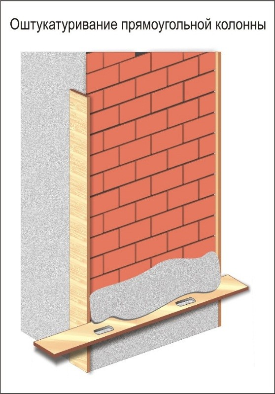
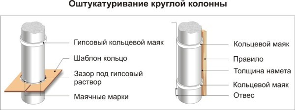

Оштукатуривание колонн

Операции при оштукатуривании прямоугольных колонн
- Подготовка поверхности
- Провешивание
- Навешивание направляющих реек
- Нанесение обрызга
- Нанесение грунта
- Разравнивание и уплотнение грунта
- Нанесение накрывки
- Затирка
- Натирка усенков
- Контроль

Операции при оштукатуривании круглых колонн
- Подготовка поверхности
- Провешивание
- Устройство кольцевых маяков
- Нанесение обрызга
- Нанесение грунта
- Разравнивание и уплотнение грунта
- Снятие маяков и заделка борозд
- Нанесение накрывки
- Затирка
- Контроль